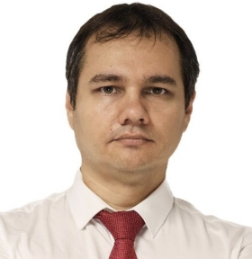

Alexey Molchanov
Erfahrener Backend- und Fullstack-Entwickler mit über 15 Jahren Berufserfahrung in der Konzeption, Entwicklung und Skalierung komplexer Softwarelösungen. Nachweisliche Erfolge bei der Umsetzung von High-Load-Projekten, Entwicklung von Microservices-Architekturen sowie Integration von Drittanbieter-Systemen.
Unternehmerische Erfahrung als CEO und Projektleiter.
Berufserfahrung
CEO & Leitender Backend-Entwickler, 06/2009 ‐ 03/2022
Techcon PVL - Pawlodar, Kasachstan
Techcon PVL - Pawlodar, Kasachstan
- Aufbau und Leitung eines Entwicklerteams (über 140 Projekte, von Webseiten bis High-Load-Systeme).
- Entwicklung und Wartung von CRM-Lösungen, Portalen für Online-Übertragungen, Chat-Systemen und Bots.
- Einrichtung automatisierter CI/CD-Prozesse.
- Implementierung von Monitoring-, Statistik- und Logging-Systemen.
- Integration von Drittanbieterdiensten (VoIP, CRM, Gateways).
- Entwicklung von Terminals und Automatisierungslösungen für Reinigungsunternehmen.
CEO, 02/2014 ‐ 09/2017
Light Travel Boutique GmbH - Pawlodar, Kasachstan
Light Travel Boutique GmbH - Pawlodar, Kasachstan
- Gründung und Leitung einer Reiseagentur
- Implementierung einer selbst entwickelten CRM-Lösung zur Optimierung der Tourenbuchung
- Finanz-, Steuer- und Dokumentationsmanagement
Verkaufsleiter, 06/2006 ‐ 03/2009
Logycom GmbH - Pawlodar, Kasachstan
(führendes IT-Unternehmen in Kasachstan)
Logycom GmbH - Pawlodar, Kasachstan
(führendes IT-Unternehmen in Kasachstan)
- Beratung und Verkauf von Computerausrüstung
- Hardware-Zusammenstellung von PCs
- Nutzung und Pflege eines CRM-Systems
Ausbildung
Bachelor, Informatik & Softwareentwicklung, 09/2004 ‐ 06/2008
Staatliche Universität Pawlodar Pawlodar, Kasachstan
Mittlere Reife, 09/1993 ‐ 06/2004
Allgemeinbildende Schule Nr. 4 Pawlodar, Kasachstan
Staatliche Universität Pawlodar Pawlodar, Kasachstan
Mittlere Reife, 09/1993 ‐ 06/2004
Allgemeinbildende Schule Nr. 4 Pawlodar, Kasachstan
Projektarbeit
-
Lotos Reinigungskette – https://lotos-team.ru
Entwicklung einer skalierbaren Webplattform mit CRM/ERP, Mikrodiensten und IoT -
HotelsBook.kz – https://hotelsbook.kz
Hotelbuchungsplattform nach dem Vorbild von Booking.com mit Microservices und Partnernetzwerk

 Breitenbachstr. 1, 54293 Trier
Breitenbachstr. 1, 54293 Trier +49 176 209 533 45
+49 176 209 533 45 alexey.molchanov@web.de
alexey.molchanov@web.de 21.06.1986
21.06.1986 B
B- LinkedIn
Alexey Molchanov
Soft-Skills
- Anpassungsfähigkeit
- Flexibilität
- Kommunikationsfähigkeit
- Zielstrebigkeit & Proaktivität
Sprachen
- Russish: Muttersprache
-
Deutsch: B1
-
Englisch: A2
IT-Skills
- Backend & Architektur: PHP, Laravel, Node.js
- Frontend & Mobile: Vue.js, Flutter, React-Native, HTML/CSS
- Datenbanken & Infrastruktur: MySQL, MariaDB, Redis, ELK-Stack, Meilisearch, Apache/NGINX
- DevOps & Tools: Docker, Git/GitHub Actions, Jenkins, PHPStorm, Android Studio, Xcode, Linux/MacOS/Windows
- Integration: Payment, CRM, SMS-Gateways, VoIP, Binance API, XMPP, Bot-Entwicklung